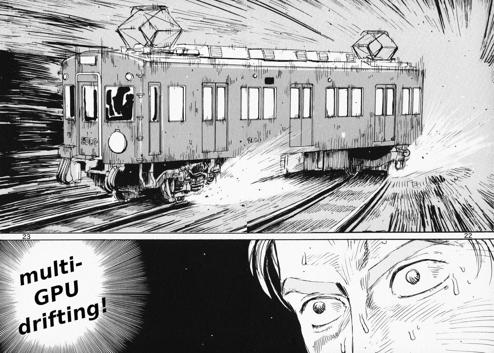
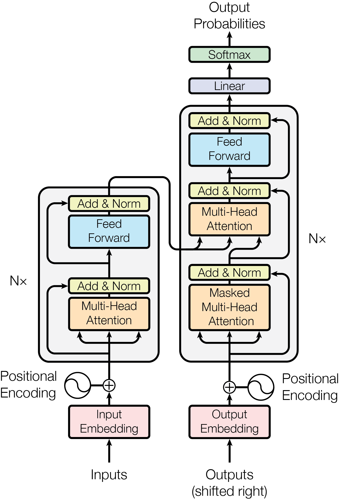
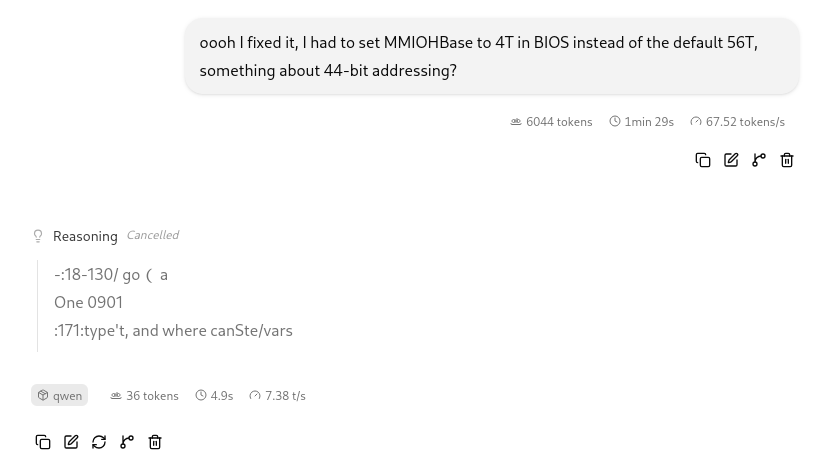
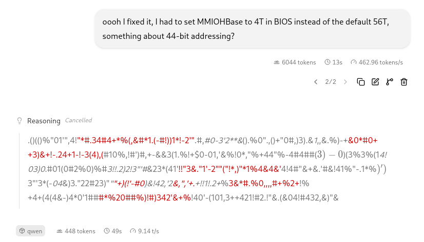

In the last chapter I built a ridiculous home server out of e-waste-grade GPUs to run AI language models. Here, I'll be talking about what I needed to do to squeeze some kind of reasonable performance out of this kind of setup. (This is going to be using existing code and techniques, messing around with llama.cpp settings and so on; writing new ROCm kernels is out of scope for this chapter).

I'm gonna go into some background here. If you already know how transformer models work, go ahead and jump to section 2. If you already know how multi-GPU parallelism works and just want to get to the part where I'm testing things, jump to section 3.
Okay, basically all of the AI text generation software that's currently in use everywhere are instances of the "transformer model" or "large language model". The design and basic technique was introduced in the paper Attention is All You Need, which is probably the most important paper in the field of computer science in the past, I dunno, twenty years? The paper is pretty readable as far as these things go. I'm sure every software engineer reading this blog post has already read it, right? (Right?)
Anyway. I'm going to over-simplify things a bit here and focus from the perspective of somebody who is trying to get these things to run fast on crappy hardware, and not go deep into the tensor math or talk much about model training, because this blog post is already going to be way, way too long.
The LLM works in terms of "tokens". A token is basically a word fragment; instead of inputting and outputting individual letters it's more efficient to chop these up into sequences of letters and have the model process those. (This is why early AI models were bad at correctly answering questions like "how many times is the letter R in the word raspberry?") Different models tokenize language differently, you can think of this as like a frequency encoding. Each time a model generates another token, it'll actually generate a probability distribution and then randomly sample one from that distribution, because language works better that way than picking the exact most likely next thing every time.
The language model is a neural network that's divided into layers. You have an input layer and an output layer and a bunch of layers in between that don't directly interact with the input or output ("hidden layers"). The input layer takes in the entire input prompt, and then each layer does math on the output of the previous layer in series. The thing where the model looks at the entire input at once, and looks at the relations between different tokens at different points in the input series, is called the "attention mechanism". If you've been reading about AI language models you probably have heard somebody confidently claim "these AI models are just next word generators, like a Markov chain is", and then you probably noticed that these AI models generate very different outputs than a Markov chain does, and wondered where exactly that guy went wrong. Well, a Markov chain doesn't have the attention mechanism, it just generates a new token based on the previous token in the series.
So, to generate the next token, the model reads in the entire tokenized prompt, turns this into an embedding matrix (each token gets turned into a vector where the length is the hidden dimension of each layer), then does the attention math on each layer (gigantic matrix multiplication for each token, for each layer in series), samples a new token, adds it to the prompt, and keeps doing this in a loop until it gets to a token that indicates that it's time to stop.

For our purposes, what this means is that every time the computer generates a token, it needs to read in the existing context, and also every weight in the model, in order to do all those matrix multiplications to generate the token. I'd mentioned the Gemma4-31B model in the last chapter; as the name implies, the model has 31 billion weights (divided into 60 layers). We've got to load all of them into the GPU to calculate the next token. Loading these takes a lot longer than the actual attention math does; token generation is (usually) limited by memory bandwidth rather than compute. This is why the server I built has all of those GPUs with lots of VRAM attached to them; the model weights and KV cache need to be in VRAM that can get to the GPU quickly. The memory attached to the CPU is by comparison a lot slower. (This is also why we are in a memory shortage right now as the entire industry shifts to prioritize producing high-bandwidth memory for data center GPUs).
This obviously isn't going to scale super well. As model sizes increase, token generation slows way down; practical limits on this kind of thing got hit already. In response, we have the misleadingly-named "Mixture of Experts" model architecture1. The idea here is that the first couple of layers are used every time to process the whole input embedding matrix, then this gets routed to some subset of the model. For the middle layers, each input token gets routed to a subset of the weights, so only some set of the weights will need to get loaded for each token. Each of these subsets is called an "expert", and I really hate this framing, because it gives you the completely false impression that like one of these branches knows about Python and one of them knows about rocket engines and one of them knows how to speak German and you can just trim the parts of the model you don't care about. This is absolutely not the case, though! The "experts" are basically random, or at least unpredictable, and for most MoE models, different tokens will get routed to different experts in a mostly uniform distribution. So, for example, Deepseek V4 Flash has 284 billion weights but for each token we will only load and process 13 billion. (The shorthand for this is "284B-A13B", only 13B get "activated"). But I don't know which 13 billion ahead of time, and it's going to change for each token that gets generated, so I still need to store all 284 billion weights in some pretty fast memory to keep token generation fast. The MoE thing makes token generation fast at the cost of needing more VRAM.
When you're using a lot of VRAM, it's going to be divided among separate GPUs. My server has four, with 32GB each; the serious business ones will have eight GPUs with like 192GB each, and then will have to split really big models up between multiple compute nodes, but the principles are the same. A GPU can read its own memory pretty quickly and memory from some other GPU not very quickly and memory on a whole different compute node will be slower still. There's several different ways to split this up. Only two of them really matter for the use case I have, where I've got a box in the garage and I'm the only real user and I'm trying to get the smartest model working at adequate speeds for myself.
Layer Parallel - We take the model and put different layers on the different GPUs. As we're generating a new token, we run through a few of the layers on GPU 1, then move that intermediate state over to GPU 2 and process the next set of layers, and so on. This is pretty simple, it gets all of our model weights into VRAM. Each layer is getting processed in series, though, because each layer depends on the output of the previous layer, and so the theoretical best speed we can expect here is basically the same as what one GPU would give us if it had as much VRAM as the whole set. (In practice it'll be a bit slower). An AMD V620 has 512 GB/s of memory bandwidth. If I'm splitting the model up between four GPUs layer parallel, for one prompt I'm gonna get... 512 GB/s of memory bandwidth, minus the overhead of moving data between the GPUs.
Tensor Parallel - We take the model and split each layer between multiple GPUs. For each layer, each GPU calculates a fraction of that matrix multiplication, then sends that result to some other GPU that will synchronize and calculate the final result before moving on to the next layer. In theory this should allow us to parallelize our memory bandwidth: I have four cards at 512GB/s, if I'm splitting the model up tensor parallel I should get 2TB/s of memory bandwidth as I move through each layer! Minus the overhead of moving data between the GPUs, of course. Which is, unfortunately, way more! We're moving data around multiple times for each layer, instead of just once per GPU per token as in layer parallel. This can (and will, on my server) outweigh the speed increase from the increased memory bandwidth.
You'll also see discussion of other parallelisms that make more sense in the context of serving multiple users at once:
Data Parallel is just running the same model on multiple separate GPUs and routing incoming queries to run in parallel. I may play around with that for multiple subagents running simultaneously in the future, but it's not actually necessary until you get to very large scale because a GPU can process inference in a batch already. (The inference pipeline is bound by memory bandwidth, as mentioned earlier, so you can slide some amount of extra matrix math in there for "free", at least until you try to do so much that it becomes compute-bound again).
Expert Parallel keeps shared tensors on every GPU and then puts each of the non-shared "experts" (or subgroups of them) onto different GPUs, so multiple users would get their queries routed to different GPUs for most of the inference pipeline. Again, this one mostly makes sense for lots of concurrent users, and is widely used by commercial LLM providers. It doesn't really help my case though.
Anyway, my server will mostly be serving me making one request at a time. I'll play around with parallel subagents at some point, maybe I'll have a couple guests hitting this thing at the same time, but I don't really have multiple users here so I'm not optimizing for these cases.
Okay, let's talk about my server.
The GPU array I have here is four AMD Radeon Pro V620 cards connected to a shared PCI Express bus. You'd expect the inter-GPU-traffic to be slow, and it's even slower than you'd expect, because the motherboard is running the older PCIe 3.0 standard and most of the cards are using 8 lanes instead of 16.
jacob@daedalus:~$ sudo lspci -vvv
[...]
LnkCap: Port #2, Speed 16GT/s, Width x16, ASPM L1, Exit Latency L1 <64us
ClockPM- Surprise- LLActRep- BwNot- ASPMOptComp+
LnkCtl: ASPM L1 Enabled; Disabled- CommClk+
ExtSynch- ClockPM- AutWidDis- BWInt- AutBWInt-
LnkSta: Speed 8GT/s (downgraded), Width x8 (downgraded)
TrErr- Train- SlotClk+ DLActive- BWMgmt- ABWMgmt-
lspci shows eight lanes and slow, like the LA freewaysSo I suspect that tensor parallel isn't going to work very well. The cards that are actually designed and marketed for AI workloads have some kind of high speed, low latency inter-GPU connection in addition to PCIe, and these are all manufacturer-specific; Nvidia has NVLink, AMD has Infinity Fabric, Intel has Xe Link, etc. These cards don't have anything like that. Around the same time AMD was making these cards for their cloud gaming scheme, they were making an AI-focused card called the AMD Instinct MI210, it has about three times the memory bandwidth and you can get a special bridge connector that connects up to four of them via Infinity Fabric. Also, a single one of those cards would cost (used, today) more than this whole box, so that's all kind of a non-starter. I have to make do with what I have.
What I have are four cards that are respectably fast individually and have poor interconnects between them, which means we're going to have to do this in layer parallel, then figure out how to fill up the pipeline. And even layer parallel has a performance impact, as we'll see.
For the purposes of this study here I had two models I was playing with; I had Gemma4-31B, and Deepseek V4 Flash.
Gemma4 31B has 31 billion parameters, at a 4-bit quantization the weights are about 18 GiB and the model fits comfortably into a single one of these GPUs that each have 32GB of VRAM. It's a dense model; every token will run through all 18 GiB of those weights.
Deepseek V4 Flash has 284 billion parameters, it's a MoE model and 13 billion parameters will activate for each token. The "stock" quant from Deepseek puts the routed expert weights at 4 bits each, for a total size of 162 GiB. This is too big for this server! I'm running here a 2-bit quantization, at 81 GiB. Only the routed expert weights are compressed this hard, the shared weights are still at full precision; overall this comes out to something like 3.5 bits per weight on disk, but 5 point someodd bits per weight getting loaded for each token. This is just about the right size to max out the memory in the four GPU array. (Remember, we also need to store the current context in VRAM as well, the "KV cache", because it's going to be the other factor in the matmul we need to do each layer). 2-bit quants in general have a bad reputation but I'm finding this particular one to be surprisingly good, probably because the shared weights are all still at high precision.2
When I first built this machine in the previous chapter, I immediately tried to run this DS4Flash quant across all four cards, in the default layer-parallel mode, leaving all of the other settings on whatever the default was. It ran at about 9 to 10 tokens per second. This was usable to get a fan control script written, but was slow enough to be annoying and unsatisfying. I knew there was performance that was getting left on the table here.
First, I doubled back and tested out some techniques with Gemma instead. It's easier to work with a smaller model, I ran into out-of-memory errors less often.
One thing I can do here is directly test the performance penalty for layer parallelism against running everything on one card. I've got a 4-bit quant of Gemma, and I locked it to a context size of 65536 tokens. Here's what some quick testing with the basic default settings showed me:
For reference, the base command:
lama-server --host 0.0.0.0 --model /mnt/storage/llm/Gemma-4-31B/gemma-4-31B-it-qat-q4_0.gguf --ctx-size 98304 --fit off --n-gpu-layers all
then, single card adds on
--device ROCm0 --split-mode none
two card test:
--device ROCm2,ROCm3 --split-mode layer
four card test:
--device ROCm0,ROCm1,ROCm2,ROCm3 --split-mode layer
The fact that this model fits all in one card allows a real apples-to-apples comparison here; we can see that with the same exact model weights and context length, splitting the layers up among these different GPUs has a performance penalty just from the synchronization they need to do. Of course, for GPUs that are designed to exchange data across some special link, this will be much less pronounced. But right now the takeaway I have is that getting this thing to go faster means having as few movements between GPUs as possible.3
Another interesting observation here is that the GPUs are all running one at a time. When I watch rocm-smi as some text generation is running, three of the GPUs are basically idle at all times, and the one that's working is only drawing 150 watts or so (out of a 250 watt maximum). In the last chapter you saw me get a 1600 watt power supply to build this machine, and while I did need all of the power connectors that the massive PSU provided, the box itself is never drawing more than 350 watts during layer-parallel (or single-card) inference. Here's the output from rocm-smi during the tw-card test which shows this fairly well:
========================================== ROCm System Management Interface ==========================================
==================================================== Concise Info ====================================================
Device Node IDs Temp Power Partitions SCLK MCLK Fan Perf PwrCap VRAM% GPU%
(DID, GUID) (Edge) (Avg) (Mem, Compute, ID)
======================================================================================================================
0 1 0x73a1, 29921 35.0°C 7.0W N/A, N/A, 0 0Mhz 96Mhz 0% auto 250.0W 0% 0%
1 2 0x73a1, 10018 37.0°C 7.0W N/A, N/A, 0 0Mhz 96Mhz 0% auto 250.0W 0% 0%
2 3 0x73a1, 62528 48.0°C 87.0W N/A, N/A, 0 500Mhz 673Mhz 0% auto 250.0W 48% 7%
3 4 0x73a1, 2460 53.0°C 128.0W N/A, N/A, 0 2410Mhz 1000Mhz 0% auto 250.0W 49% 96%
======================================================================================================================
================================================ End of ROCm SMI Log =================================================
This is all very unsatisfying! Most of the hardware is idle at any given time. And, while 20 tokens per second is a usable level for a chat interface, it would be nice if we could go faster, especially when it's doing reasoning about some complicated thing. (Or writing code in an agent harness, which we'll talk about in Chapter 3). And we can see why this is happening; each layer is basically executed in series so the GPUs that aren't working the current layer are just sitting there, and even when we're processing some layer, the operation is bound on memory throughput so the processor is spending a lot of time idle waiting for data to arrive.
The current state of the art here, to get a model to generate output tokens faster by parallelizing this serial pipeline, is "speculative decoding", or the use of a draft model. You take a much smaller model that generates tokens that are usually kind of similar, and run it first, and then the main model verifies the next several tokens in parallel. How well this works is basically proportional to how well the draft model predicts what the main model will produce, and how well you can parallelize inference. Early experiments with this just used a smaller and faster transformer LLM trained on similar data as the big one; later developments use a specialized multi-token prediction model that generates several tokens simultaneously very quickly and shares some tensors and KV cache with the base model for memory efficiency.
Gemma4 has such an MTP model and it's quite well-optimized; they call it "gemma4-assistant". Let's enable it!4
We add the model and the flags to the command from earlier.
--spec-draft-model /mnt/storage/llm/Gemma-4-31B/MTP/mtp-gemma-4-31B-it-Q8_0.gguf --spec-draft-n-max 3 --spec-type draft-mtp --n-gpu-layers all --n-gpu-layers-draft all --spec-draft-device ROCm1
Two-card configuration we also specify what device the draft model runs on, which must match the main model's devices because they share tensors for some layers.
-spec-draft-device ROCm2,ROCm3
With the MTP model enabled we see:
Putting it all in one card is faster than splitting it in a layer parallel two or three cards because llama.cpp will batch process multiple tokens on a single GPU quite well; inference is memory-bound so there's spare compute just kind of lying around. 20 tokens per second on two cards isn't bad; we're back up to the speed of one card without it. This is not a total loss if we need more context than fits on one card but it's still disappointing.
Okay, so we've proved out the use of a draft model to speed things up, and we have a Gemma4-31B configuration that generates quickly. It only uses one card, but that's fine, it fits.
Now, let's speed up Deepseek V4 Flash with a draft model and see if it's less annoyingly slow. The Deepseek team came up with a new draft model architecture called DSpark and released it with Deepseek V4. Here's a link to the paper, it's an improvement of a previous draft model architecture, DFlash. We can download and run their draft model that they trained to work with Deepseek V4 Flash, with a recent build of llama.cpp. Spread across all four cards we're getting something like 13 tokens per second. Promising! I'm noticing that performance is varying pretty sharply too as it works its way through a prompt. Something feels off here.
Reading the DSpark paper, I think that the draft model is going to be pretty sensitive to inter-GPU transfers more so than the main model. I don't have my head around all of the details, but DSpark (like predecessor DFlash) is a diffusion model similar to an image generator and I know these don't like running on multiple GPUs. The paper's section "Real World Deployment of DSpark" mentions some issues getting the model to parallelize well across GPUs, and I bet the issues are worse on my hardware. My hypothesis here is that I'll see a speed increase if I can get DSpark to run on one GPU only, and spread the main model across all four GPUs with whatever room is left.
This took some trial and error. The draft model takes a nontrivial amount of VRAM itself, about 10 GB, and that's after it shares the output layer with the main model for memory efficiency. A build of llama.cpp off of `master` doesn't handle this layer sharing particularly well. At first, llama.cpp would "helpfully" spill the model over into CPU memory, making it significantly slower (6 or fewer tokens/sec). I locked this out by explicitly specifying "--n-gpu-layers all" so these would turn into out-of-memory errors. After I shrunk down the context a bit, I could use the --split-tensor option to distribute layers of the model around so that there was more room on the one card that held the draft model.
llama-server --host 0.0.0.0 --port 8080 \ --model /mnt/storage/llm/DeepSeek-V4-Flash-0731/DeepSeek-V4-Flash-IQ2XXS-w2Q2K-AProjQ8-SExpQ8-OutQ8-chat-v2-imatrix-0731.gguf \ --model-draft /mnt/storage/llm/DeepSeek-V4-Flash-0731/dspark-DeepSeek-V4-Flash-0731-Q8_0.gguf \ --spec-type draft-dspark --spec-draft-n-max 3 \ --n-gpu-layers all --n-gpu-layers-draft all \ --parallel 1 --fit off --ctx-size 524288 \ --device ROCm3,ROCm2,ROCm1,ROCm0 --tensor-split 11,12,12,8 --split-mode layer
This still failed, because the draft model shares layers with the base model to save on memory usage, and now those layers aren't necessarily on the same card as the drafter!
I was about to start digging into the source code and making changes and then my buddy Sol found out that somebody else was already working on this; there was an open PR about more-or-less this issue so I built from his PR branch. Here's where it started actually working!
Now I was getting about 15-16 tokens per second out of Deepseek V4 Flash. I knew there was more I could do here, and the rest of the settings changes were kind of boring, so instead of guessing and checking manually as I'd been doing previously, I used a script to sweep through various setting combinations and test token generation against a benchmark. (I just grabbed some random question about air conditioning my garage and used it as a baseline, since I knew it would generate lots of output in response).
I vibecoded out a few python scripts to sweep through various settings configurations and spit results out into CSV files. First, I swept through different ways to split the tensors between the cards to balance out memory usage on each card, so I could then scale up the context size until I filled up VRAM. I got up to 512M tokens of context space this way! Then I swept various other settings - number of speculative MTP tokens to attempt to use (5 performed worse than 3 because acceptance rate was so low that the extra compute just wasted time), batch and microbatch size for processing (a larger batch size had a surprisingly large effect on both token generation speed and memory usage, while a larger microbatch size didn't matter at all and needlessly allocated a bunch of system RAM), and a bunch of other stuff that didn't end up mattering one way or the other (n-gram prediction didn't help, changing the default settings for flash attention or thread count or NUMA or whatever did nothing useful). Also, shuffling which cards held which tensors was useful for some reason.
Mostly the scripts just swept through benchmarks while I did some chores. By the end of this, the benchmark was showing 22 tokens per second and I was consistently getting 19-20 tok/s in the web UI and in the OpenCode harness. It would spit out ranked choices for the settings like this:
variant pp mean tg mean tg med tg sd accept meanlen RSS/anon GiB out hash GPU-only pipeline c524288_b4096_ub256_n3_p0_ts12-11-12-8_dROCm3-ROCm2-ROCm1-ROCm0_faon_bson_poll50_tauto_numadef 99.32 22.96 22.95 0.15 0.741 3.21 81.8/13.2 0949adc5 True yes c524288_b4096_ub256_n3_p0_ts12-11-12-8_dROCm3-ROCm2-ROCm1-ROCm0_faon_bson_poll50_t16-16_numadef 97.00 22.93 22.93 0.04 0.741 3.21 81.8/13.1 0949adc5 True yes c524288_b4096_ub256_n3_p0_ts11-12-12-8_dROCm1-ROCm2-ROCm3-ROCm0_faon_bson_poll50_t16-16_numadef 99.51 22.84 22.77 0.17 0.734 3.19 81.8/13.2 0949adc5 True yes c524288_b4096_ub256_n3_p0_ts11-12-12-8_dROCm1-ROCm2-ROCm3-ROCm0_faon_bson_poll50_tauto_numadef 98.58 22.81 22.83 0.13 0.734 3.19 81.8/13.1 0949adc5 True yes c524288_b4096_ub256_n3_p0_ts11-12-12-8_dROCm3-ROCm2-ROCm1-ROCm0_faon_bson_poll50_t16-16_numadef 100.22 22.77 22.74 0.08 0.734 3.19 81.8/13.1 0949adc5 True yes c524288_b4096_ub256_n3_p0_ts12-11-12-8_dROCm1-ROCm2-ROCm3-ROCm0_faon_bson_poll50_t16-16_numadef 95.30 22.76 22.74 0.10 0.741 3.21 81.8/13.1 0949adc5 True yes c524288_b4096_ub256_n3_p0_ts12-11-12-8_dROCm1-ROCm2-ROCm3-ROCm0_faon_bson_poll50_tauto_numadef 99.75 22.76 22.78 0.15 0.741 3.21 81.8/13.1 0949adc5 True yes c524288_b4096_ub256_n3_p0_ts11-12-12-8_dROCm3-ROCm2-ROCm1-ROCm0_faon_bson_poll50_tauto_numadef 97.77 22.15 22.16 0.08 0.734 3.19 81.8/13.1 0949adc5 True yes
At this point I felt like I'd wrung about as much as I can out of this. It's still a little slower than I'd like, but at least it's twice as fast as when I started. Hooking this thing up to OpenCode or a similar agent harness is now pretty usable. I've got a single-card configuration with one model going at a very solid 40 tokens per second and a configuration that uses all four cards to run a smarter model going half as fast.
Something here still didn't feel right, though. The inter-card communication slowdown seemed excessive, it kept bugging me. It was hitting that instinctual response I have when code is slow and doesn't have a good reason for it. There's a benchmark that comes with older versions of ROCm to measure ram throughput, rocm-throughput-test.
RocmBandwidthTest Version: 2.6.0
Launch Command is: /opt/rocm-6.4.0/bin/rocm-bandwidth-test (rocm_bandwidth -a + rocm_bandwidth -A)
Device: 0, Intel(R) Core(TM) i9-10900X CPU @ 3.70GHz
Device: 1, AMD Radeon PRO V620, GPU-3e69435e6f91ec49, 19:0.0
Device: 2, AMD Radeon PRO V620, GPU-d2de7efac208e0e8, 1c:0.0
Device: 3, AMD Radeon PRO V620, GPU-a11601b34831450c, 67:0.0
Device: 4, AMD Radeon PRO V620, GPU-6e4c81c877e6eba8, b5:0.0
Inter-Device Access
D/D 0 1 2 3 4
0 1 1 1 1 1
1 1 1 0 0 0
2 1 0 1 0 0
3 1 0 0 1 0
4 1 0 0 0 1
Unidirectional copy peak bandwidth GB/s
D/D 0 1 2 3 4
0 N/A 6.802 6.803 13.586 6.793
1 7.163 407.461 N/A N/A N/A
2 7.164 N/A 583.860 N/A N/A
3 14.301 N/A N/A 684.365 N/A
4 7.164 N/A N/A N/A 699.342
Right, that explains it, PCIe peer-to-peer transfers are just completely broken and everything is taking a pit stop at the CPU because inter-card DMA doesn't work. Of course that's slow. I was immediately sure that I could get a solid performance increase by fixing this.
First I'm digging around in the BIOS settings. When I first set up this box, I needed to set MMIO High Base to some non-default higher value to get this board to boot at all. (This tells the cards where their base memory address range should start; the default value didn't work with four 32GB cards, probably because that would be a really weird configuration when the motherboard was made back in 2016). Back then, I just set it to 56T to get it to work. When debugging all this, Sol mentioned that the AMD documentation has some vague statement about how some GPUs (didn't specify this one) actually only do 44-bit addressing, so we'd need the memory addresses to stay below 16T. I did some trial and error here and landed on these settings: 4T MMIO High Base, 1024G granularity.
Inter-Device Access
D/D 0 1 2 3 4
0 1 1 1 1 1
1 1 1 1 1 1
2 1 1 1 1 1
3 1 1 1 1 1
4 1 1 1 1 1
Unidirectional copy peak bandwidth GB/s
D/D 0 1 2 3 4
0 N/A 6.754 6.804 13.815 6.798
1 7.264 619.634 0.460 0.460 0.460
2 7.264 0.461 825.823 0.461 0.461
3 14.508 0.455 0.455 717.872 0.454
4 7.264 0.460 0.460 0.460 747.623
The bandwidth test now shows direct connectivity between cards. It looks pretty slow, though. Disconcerting. Let's give tensor parallel a try. Loaded up llama.cpp, it's looking okay, then we try some inference:

Well that's not right. Layer parallel?

After this, the kernel panics.
Okay, so I have some kind of corruption issue going, then; the model is having a stroke. The answer was so well known that even the tiny models on the server knew what to try next: set "iommu=pt" in the kernel settings.
Unidirectional copy peak bandwidth GB/s
D/D 0 1 2 3 4
0 N/A 6.757 6.788 13.473 6.792
1 7.164 567.469 5.228 7.162 5.226
2 7.164 5.229 582.947 7.162 5.226
3 14.313 5.227 5.227 766.083 5.227
4 7.164 5.225 5.227 7.161 705.815
Now we're cooking!
Earlier, before I had this working, I tested out tensor parallel on Gemma4 alongside the layer parallel test earlier. My initial results, with broken PCIe P2P, were:
Re-tested this again after getting this working and now I see:
(Recall that 40 tok/s was the single-card baseline).
So, the peer-to-peer sync is still slowing things down if I try to span across four cards, but between only two I'm now getting a little boost! It's not the "twice as fast" that I would get if I had a really fast link between them, but the communication slowdown isn't consuming the entire speedup from the increased memory bandwidth. That's not bad at all.
Somewhere in the middle of me testing all of this stuff, the new Qwen3.8-27B model dropped and I saw similar results there: about 27 tokens per second with one card and about 35 with two cards in tensor parallel, a nice 30% speedup, with speeds going back down below the single-card level when I tried to deal in four.
Let's take another look at power draw per card in rocm-smi:
========================================== ROCm System Management Interface ==========================================
==================================================== Concise Info ====================================================
Device Node IDs Temp Power Partitions SCLK MCLK Fan Perf PwrCap VRAM% GPU%
(DID, GUID) (Edge) (Avg) (Mem, Compute, ID)
======================================================================================================================
0 1 0x73a1, 29921 31.0°C 6.0W N/A, N/A, 0 0Mhz 96Mhz 0% auto 250.0W 4% 0%
1 2 0x73a1, 10018 32.0°C 7.0W N/A, N/A, 0 0Mhz 96Mhz 0% auto 250.0W 0% 0%
2 3 0x73a1, 62528 64.0°C 215.0W N/A, N/A, 0 2480Mhz 1000Mhz 0% auto 250.0W 65% 97%
3 4 0x73a1, 2460 68.0°C 221.0W N/A, N/A, 0 2395Mhz 1000Mhz 0% auto 250.0W 65% 98%
======================================================================================================================
================================================ End of ROCm SMI Log =================================================
Now we're really using multiple cards simultaneously, instead of flitting around between them. Less idle hardware! (I should probably do some tokens-per-watt-hour measurements but at this point I'm getting pretty bored of this and want to move on to using the models to actually do something).
At this point I attempted to run Deepseek V4 Flash in tensor parallel across all four cards and all I got was an error message about how llama.cpp doesn't yet support tensor parallel on the Deepseek4 architecture. I have a hypothesis here that it would run fastest, on this server, as a hybrid, two TP2 groups in layer parallel. Changing llama.cpp to support that would be a whole bunch of work that I'm not going to bite off at the moment, though.
I didn't spend any real time here talking about prompt processing. Before an LLM can do any token generation at all, it needs to do "prefill", or prompt processing, where it turns the long prompt into the initial K and V matrix embeddings. This is generally faster than token generation but it can be annoyingly long for long prompts, which you tend to get when agentic coding tools try to read in large files (or when you just e.g. copy a whole blog post into the thing for proofreading). It's a completely different workload from token generation: it's compute-bound instead of memory-bound and because of this it runs faster in layer parallel. In theory I could have the best of both, at least for the smaller models, by doing prompt processing on one pair of GPUs in layer parallel and then token generation on another pair in tensor parallel. (The big LLM providers are basically all doing this kind of thing now, and there's hardware development to specialize data center GPUs into one workload or the other). This also would require some development on llama.cpp; I'm going to table this for now.
Next chapter, we'll talk about giving the AI some tools so it isn't just a text generator.
Here's what I ended up with as commands to run. Your own hardware will probably differ and you'll probably need to sweep settings too.
Layer-parallel, 22-ish tok/s output.
llama-server --host 0.0.0.0 --port 8080 \ --model /mnt/storage/llm/DeepSeek-V4-Flash-0731/DeepSeek-V4-Flash-IQ2XXS-w2Q2K-AProjQ8-SExpQ8-OutQ8-chat-v2-imatrix-0731.gguf \ --model-draft /mnt/storage/llm/DeepSeek-V4-Flash-0731/dspark-DeepSeek-V4-Flash-0731-Q8_0.gguf \ --spec-type draft-dspark --spec-draft-n-max 3 --n-gpu-layers all --n-gpu-layers-draft all \ --parallel 1 --fit off --flash-attn on --ctx-size 524288 \ --device ROCm3,ROCm2,ROCm1,ROCm0 --tensor-split 11,12,12,8 --split-mode layer \ --spec-draft-device ROCm0 --spec-draft-backend-sampling \ --batch-size 4096 --ubatch-size 256 --poll 50
Tensor parallel, 45-ish tok/s output.
llama-server --host 0.0.0.0 --port 8080 \ --model /mnt/storage/llm/Gemma-4-31B/gemma-4-31B-it-qat-Q4_0.gguf \ --spec-draft-model /mnt/storage/llm/Gemma-4-31B/MTP/mtp-gemma-4-31B-it-Q8_0.gguf \ --spec-draft-n-max 3 --spec-type draft-mtp \ --n-gpu-layers all --n-gpu-layers-draft all \ --device ROCm2,ROCm3 --ctx-size 98304 --split-mode tensor
Tensor parallel, 35-ish tok/s output. Note: reasoning-effort must be set to medium for this model to be useful, the default xhigh is unusable.
llama-server --host 0.0.0.0 --port 8080 \ --model /mnt/storage/llm/Qwen3.8-27B/Qwen3.8-27B-Q6_K.gguf \ --device ROCm2,ROCm3 --split-mode tensor \ --spec-type draft-mtp --spec-draft-n-max 4 \ -b 4096 -ub 256 --parallel 1\ --n-gpu-layers all --jinja \ --reasoning-effort medium